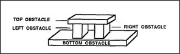
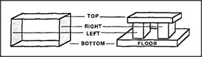

As an example of reformulation, we'll represent the concept of a box in the form of a machine that has a goal. We can use this to understand the Hand-Change phenomenon. What makes a Block-Arch trap a person's arm so that there's no way to escape except to withdraw? One way to explain this is to imagine the arch as made of four potential obstacles — that is, if we include the floor.
An obstacle is an object that interferes with the goal of moving in a certain direction. To be trapped is to be unable to move in any acceptable direction. Why does the block-arch form a trap? The simplest explanation is that each of its four sides is a separate obstacle that keeps us from escaping in a certain direction. (For our present purposes, we'll regard moving the hand forward or backward as unacceptable.) Therefore we're trapped, since there are only four acceptable directions — up, down, left, or right — and each of them is separately blocked. Psychologically, however, there's something missing in that explanation: it doesn't quite describe our sense of being trapped. When you're caught inside a box, you feel as though something is trying to keep you there. The box seems more than just its separate sides; you don't feel trapped by any particular side. It seems more like a conspiracy in which each obstacle is made more effective because of how all the other obstacles work together to keep you from going around it. In the next section we'll assemble an agency that represents this active sense of frustration by showing how those obstacles cooperate to keep you in.
In order to represent this concept of trap or enclosure, we'll first need a way to represent the idea of a container. To simplify matters, instead of trying to deal with a genuine, six-sided, three-dimensional boxlike container, we'll consider only a two-dimensional, four-sided rectangle. This will let us continue to use our Block-Arch uniframe, together with that extra side to represent the floor.
Why focus so sharply on the concept of a container? Because without that concept, we could scarcely understand the structure of the spatial world. Indeed, every normal child spends a great deal of time learning about space-surrounding shapes — as physical implements for containing, protecting, or imprisoning objects. But the same idea is also important not only physically, but psychologically, as a mental implement for envisioning and understanding other, more complicated structures. This is because the idea of a set of all possible directions is one of the great, coherent, cross-realm correspondences that can be used in many different realms of thought.